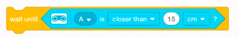

Lesson 4: Sonic Sight
What does the sonar used by boats and submarines, and echolocation used by bats have in common? Both help the robot navigate or detect objects in its surroundings without relying on light to see.
Both sonar and echolocation use pulses of sound. By sending out a short “ping” and listening for the echo, they can tell how far away objects are. The longer the distance, the more time it takes for the sound to bounce back.
{kind=link}
The Distance Sensor
The distance sensor included in your LEGO® Education SPIKE™ kit works like a very simple sonar. It sends out a ping (a sound that is too high-pitched for humans to hear) and listens for the echo to figure out how far away objects are in front of it.
{kind=link}
Like the touch and light sensors, it can be used as an expression in conditional, wait, or other blocks in your program. For example:
wait until is distance with ultrasonic sensor

Sensor Exercise
Find the distance to various objects around the room.
As you did in the light sensor exercise, you can see sensor values in the Dashboard and Dashboard Overview in the SPIKE App. Connect the SPIKE brick to the computer, then use the Dashboard to change the distance unit from centimeters to inches, if desired.
- Try pointing the sensor at objects at various distances. How accurate is it? What is the maximum distance the sensor can see?
- Point the sensor at heavy fabric, like a chair back or a coat. What happens?
{kind=link}
If multiple teams are using distance sensors in the same room, they can interfere with each other. Keep a wall or other divider between robots to avoid this.
Events
Certain programming tasks can be coded with events. When the program detects a condition, some code can run to handle the event. Typically, the main part of your program runs under the following block and performs the most important tasks.
when program starts
{kind=link}
Event blocks can perform actions that are less important or can happen at unpredictable times. Both apps call an event block and the blocks that handle it a “stack.”
For some programs, events work better than loops with conditions or wait until blocks. Events are a common programming technique in other systems and programming languages. Variables may help coordinate tasks across events.
A common source of programming errors with events is trying to operate the same motor or sensor in multiple event stacks. Operate different motors, or coordinate the stacks with variables or a stop-moving block such as:
stop moving 
Programming Exercise
Create a security robot that scans an empty area for intruders. The main program will rotate the robot periodically. Event blocks triggered by an object being detected by the ultrasonic sensor will trigger an alarm. The alarm will stop when the object is no longer detected.
- Attach the ultrasonic/distance sensor to the front of your robot. The sensor should face forward. To avoid false alarms, do not mount the sensor too close to the floor.
- Create the following program. Because this is a movement program, include our typical
wait until left pressedcondition at the beginning of the program.
- To create the
is_alertvariable, scroll to theVariablesarea, which should be empty. - Click the
Make a Variablebutton. A dialog will ask for the variable name. Enteris_alert. - Click the OK button. Blocks to use and change
is_alertwill appear in theVariablesarea. Use 0 and 1 to represent false and true. - Code the rest of the program. When the distance sensor detects an object, start an alarm. When the object moves away, stop the alarm.
- To create the
- Clear the work area around the robot, connect your robot to the SPIKE App, and run the program.
{kind=link}
- The event handler uses a stop-all-sounds block to disable the alarm. If that stops sounds, do we really need the
is_alertvariable? - If the “secure area” were a real room, how would we modify the program to prevent false alarms?
- Could we make this program work without events, using wait, looping, and conditional blocks? How would its behavior differ?
- The alarm is armed when the program starts, before you press the
leftbutton to allow the robot to move. How could we make the alarm active after that button press without adding another wait-until block?